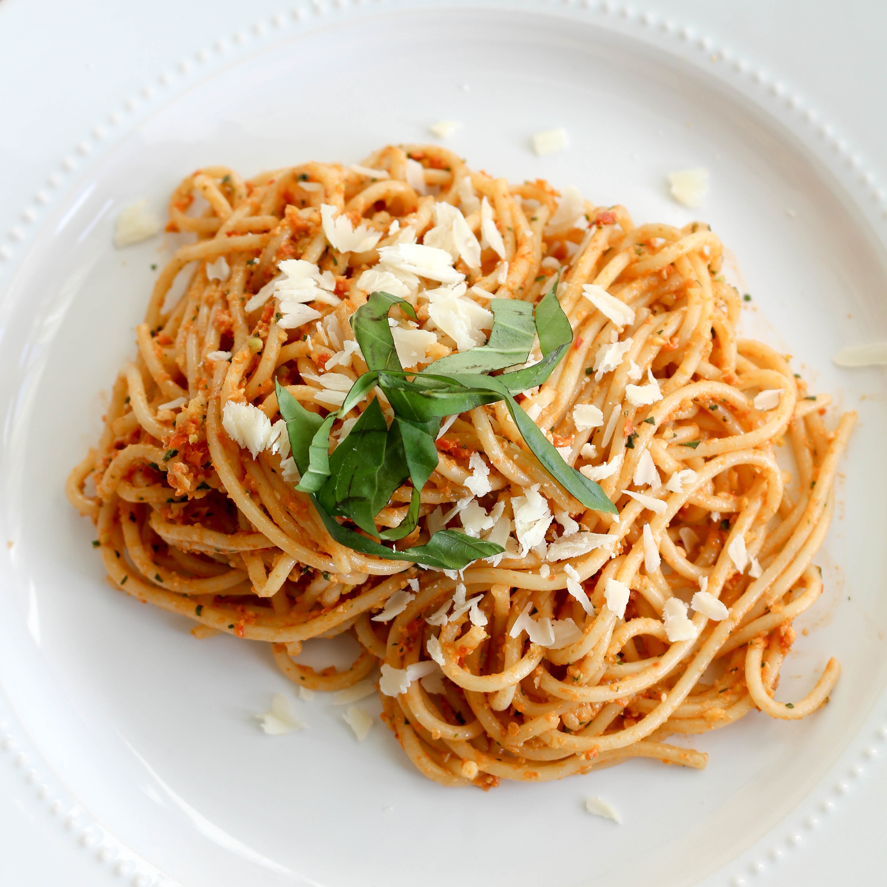
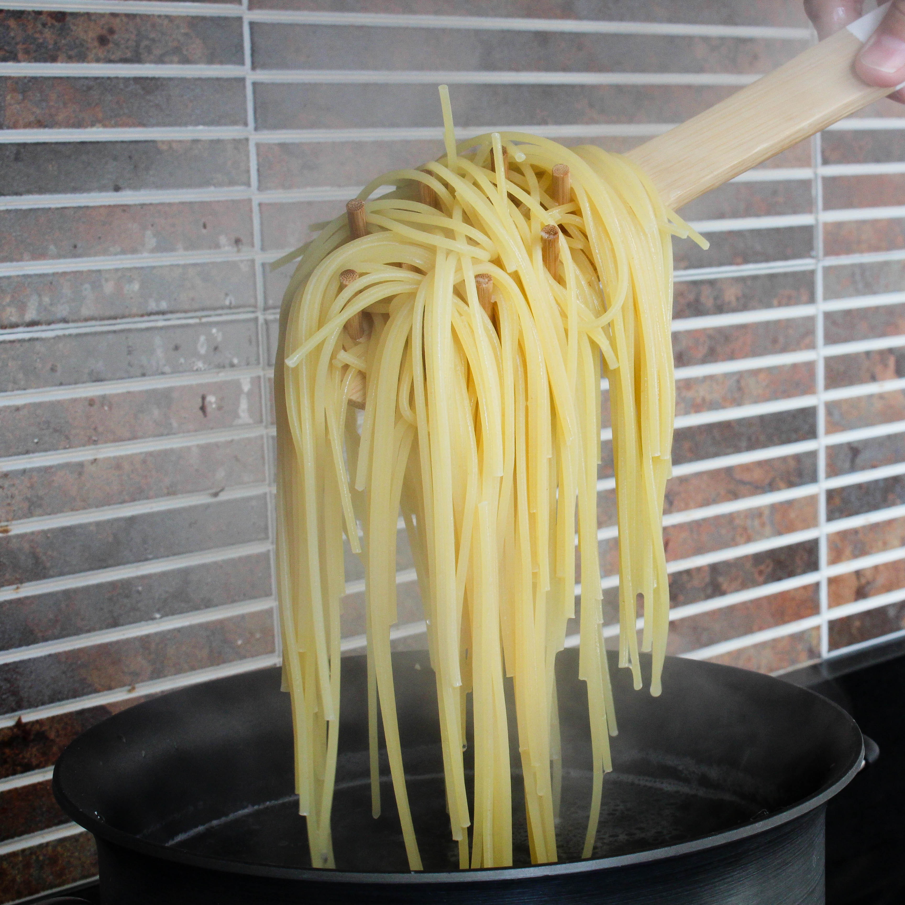
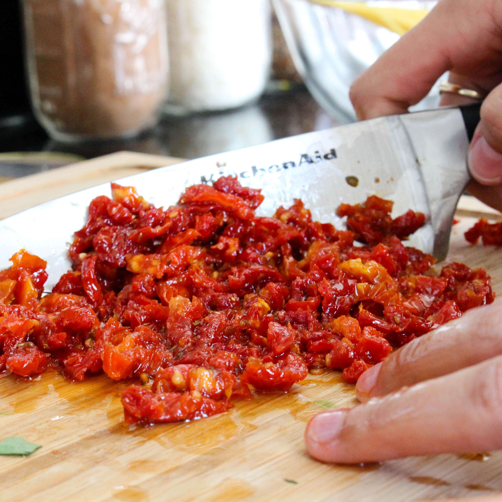
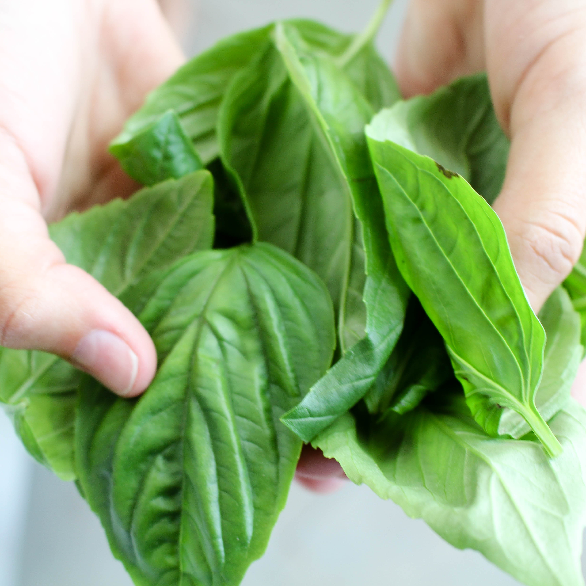
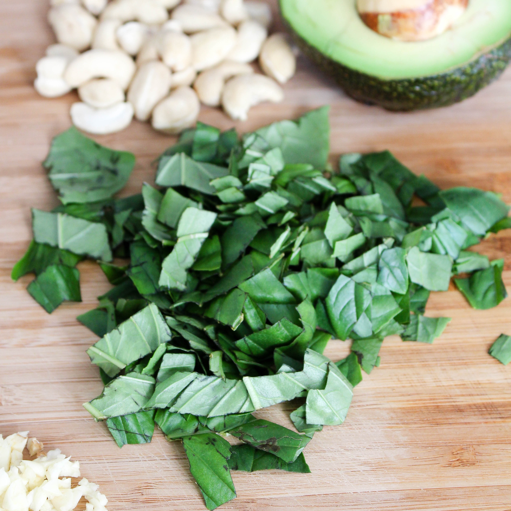
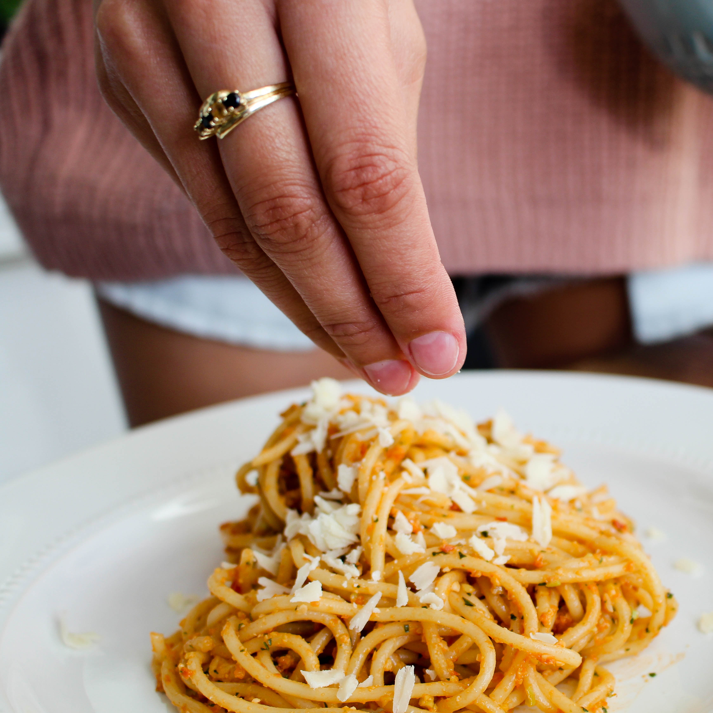

All photography by Olivia Becht
If you like I do, live in the high temperatures in Southern FLorida, you grasp at any chance of a cool breeze. It was Friday afternoon, the sun was setting, and I was in search of tasty comfort food. My go to is always pasta! This time, I wanted a lil' spice with my noodles. I scavenged through my Pinterest and came across The Crazy Vegan Kitchen, a vegan food blog. Her dish Avaocado and Sun-dried Tomato Pesto Pasta caught my eye and I knew I had to try it!
I called over my friend Olivia, and we got cookin'. Do me a favor, while you're tossing up this delicious dish; pour yourself a glass of wine and put on 'Always On My Mind' by Marbert Rocel, I promise you won't regret it.
This Friday afternoon turned into a cozy and cloudy one filled with too much wine and spaghetti to feed our souls. We poured and poured and cleaned our bowls, not to mention the mountains of cheese that embellished our noodles. Aside from the sprinkled parmasean that covered every inch of my kitchen, the sun-dried tomatos oiled my knives and cutting, and the basil laid out on my countertop, almost like it was waiting to catch South Florida's rays of sunshine the following day.
The messy kitchen was wiped away, the wine bottle clearned, but the good times stayed. My balcony door remained open while I made my way upstairs to end a beautiful Friday. Bon Apetit.
8 oz. Spaghetti
Water to cook pasta
1/4 cup cashew nuts
1/2 avocado
1/2 cup loosely packed basil
1/2 cup chopped sun-dried tomatos (oil packed, but drained)
1 teaspoon minced garlic
1 teaspoon red pepper flakes
2 tablespoons reserved oil from sun-dried tomatos
1 tablespoon water
1 teaspoon maple syrup
Cook pasta according to direction on package. Prepare the peso whilst pasta cooks. Jam pack those pesto ingredients into a food processor. Hit start and watch that florescent orange hue POP!
Transfer that pesto to a large bowl. Drain pasta but hold it! Reserve the cooking water for later use.
Combine pasta with the pesto and make those noodles dance, until completely covered. Add the reserved water to loosen the pesto.
Serve warm to your guests or indluge by yourself!
    